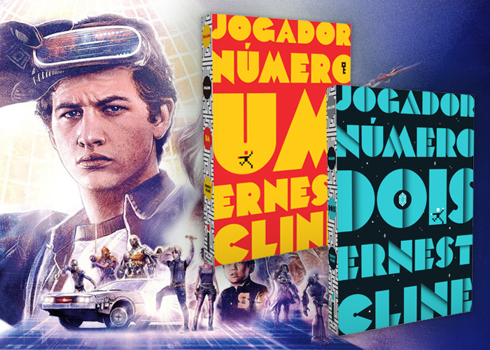

Jogador Número 1
O ano é 2045 e o mundo real é um lugar terrível. Para escapar, a humanidade passa a maior parte do tempo logada no OASIS, uma realidade virtual utópica com milhares de planetas onde as pessoas podem ser o que quiserem e coisas fantásticas acontecem ― magos duelam contra robôs japoneses gigantes, há planetas inteiros inspirados em Blade Runner e DeLoreans voadores podem atingir a velocidade da luz. Wade Watts cresceu dentro do OASIS, brincando com seus programas educativos, e, aos dezoito anos, a plataforma ainda é a melhor parte de sua vida. Mas está em risco, graças à Caçada.
Quando o excêntrico criador do OASIS morreu, deixou para trás um concurso para definir seu herdeiro. O primeiro usuário que desvendar as pistas, vencer uma série de desafios e chegar ao Easter egg ganhará a vasta fortuna do bilionário e o controle total da plataforma. Milhões de pessoas entram na disputa ― inclusive Wade, que passa a estudar obsessivamente a cultura pop dos anos 1980 que o criador adorava ―, mas também funcionários de uma perigosa corporação, que pretende limitar o acesso à plataforma.
Cinco anos se passam sem que ninguém consiga desvendar a primeira pista. Até que o nome de Wade sobe para o topo do placar. De repente, o mundo inteiro está assistindo, e novos rivais o alcançam: Art3mis, Aech, Daito, Shoto e, o pior de todos, Sorrento. Aos poucos, fica claro para Wade que a competição virtual tem riscos muito reais. E a única forma de sobreviver e salvar o OASIS é ganhando. Publicado originalmente em 2011, Jogador Número Um se tornou um best-seller, foi agraciado com diversos prêmios e deu origem ao filme de sucesso dirigido por Steven Spielberg, lançado em 2018. Unindo ficção científica a inúmeras referências à cultura pop dos anos 1980 e ao universo dos videogames, essa ópera espacial geek conquistou fãs em todo o mundo.